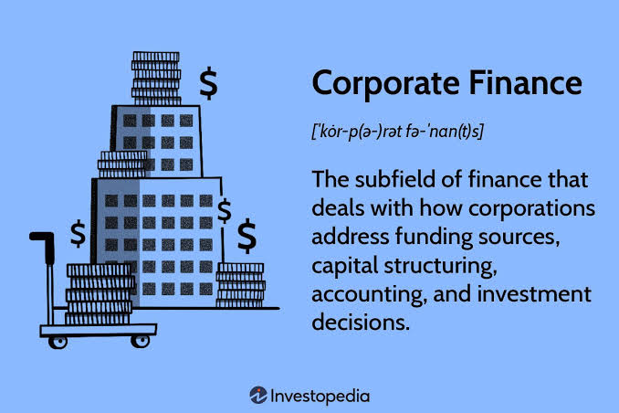

Corporate Finance (FP&A & Treasury)
Synthesize corporate strategy, financial planning & analysis (FP&A), capital allocation, and complete the final curriculum capstone test!

Corporate Finance is the internal finance function within a corporation, managing financial planning, analysis, capital structure, and liquidity. Corporate finance professionals work within a company rather than at a bank or investment firm.
The role requires strong financial modeling and forecasting skills, business acumen, and the ability to work collaboratively with different business units. Corporate finance professionals are the financial stewards of the organization.
Core Functions
• Financial Planning & Analysis (FP&A): Budgeting, forecasting, variance analysis,
and management reporting.
• Treasury: Managing cash, liquidity, banking relationships, and capital structure.
FP&A focuses on planning and performance management. The Treasury focuses on cash management and financing. Both are essential to the company's financial stability and growth.
• FP&A Branch: Corporate budgeting, multi-year operating forecasts, and variance tracking.
• Treasury Branch: Liquidity optimization, debt maturity management, and FX/Interest rate hedging.
FP&A Responsibilities
FP&A professionals prepare budgets, forecasts, and long-term plans; analyze business performance; provide decision support to management; and report to the CFO and Board. They are the primary source of financial insights for the company's leadership.
The work involves analyzing business performance, identifying trends and risks, and recommending actions to improve financial outcomes. FP&A professionals are strategic partners to the business, not just number-crunchers.
$$\text{Annual Budgeting} \longrightarrow \text{Rolling Forecasts} \longrightarrow \text{Performance Variance Analysis} \longrightarrow \text{CFO Decision Support}$$
Treasury Responsibilities
Treasury professionals manage day-to-day cash operations, maintain bank relationships, manage debt and investments, and oversee corporate risk management (foreign exchange, interest rate). They ensure the company has sufficient liquidity to meet its obligations.
The work involves cash forecasting, managing banking relationships, and hedging financial risks. Treasury professionals are responsible for optimizing the company's cash position and managing its financial risks.
• Cash Operations: Daily cash positioning, working capital buffer, commercial paper.
• Financial Risk Hedging: Managing currency FX exposures & floating interest rate risk swaps.
Career Progression
Financial Analyst (2-3 years) → Senior Analyst (2-3 years) → Manager → Director → VP → CFO.
Each level comes with increased responsibility for financial strategy, team management, and executive decision-making. Promotion is based on performance, business impact, and leadership ability.
Most professionals who stay in corporate finance for the long term eventually become CFOs, leading the company's overall financial strategy and reporting to the Board of Directors.
Financial Analyst (2-3 yrs) ➔ Senior Analyst (2-3 yrs) ➔
Manager ➔ Director ➔ VP of Finance ➔
Chief Financial Officer (CFO)
16-Card Memory Flip Challenge
Match all 8 pairs of career terms and definitions to complete the entire curriculum and graduate!
🃏 Play Memory Flip Minigame